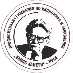

За нас

През втората половина на ХІХ в. Русе се налага като
преуспяващ търговски, стопански
и
културен център по долното течение на река Дунав. Този негов облик се запазва и след
Освобождението. Заради
бурното
индустриално развитие и традиционните търговски връзки, които градът поддържа с почти всички
дунавски
държави, той
става естествен стопански център на Княжество България.
В това училище учениците се подготвят да анализират и да осчетоводяват всякакъв вид
търговско-икономическа
информация, да познават съвременния мениджърски процес, като основа за предприемаческа дейност и
начин на
иновативно
мислене. Изучават организацията и технологията на данъчната и митническата дейност, усвояват
английски,
немски и
руски език. В отговор на съвременните изисквания учениците придобиват умения за решаване на
конкретни
практически
казуси в електронния бизнес. Подготовката в областта на информационните технологии и чуждите
езици дава
възможност
да се решават широк кръг оперативни и управленски задачи в условията на пазарна икономика и
информационното
общество
у нас и в чужбина.
Паралелки
- Икономика и мениджмънт
- Оперативно счетоводство
- Електронна търговия
Преподаватели
| Име | Позиция | Име | Позиция |
|---|---|---|---|
| Мариана Колева Гъркова | Директор | Росица Симеонова Мицова | ЗДУД |
| Стела Митева Коева | Училищен психолог | Анета Петрова Ангелова | Главен учител теоретично обучение |
| Анна Димитрова Гръкова-Стамболиева | Старши учител философия | Борислава Бисерова Николова | Учител ФВС |
| Боряна Марчева Илчева | Учител методик теоретично обучение | Виктория Атанасова Стоянова | Учител химия и опазване на околната среда |
| Гергана Давидова Тодорова-Игнатовска | Учител теоретично обучение | Даниела Цонева Иванова | Старши учител теоретично обучение |
| Даниела Радославова Маринова | Старши учител история и цивилизация | Десислава Иванова Игнатова | Учител теоретично обучение |
| Диана Илиянова Дончева-Станчева | Старши учител теоретично обучение | Диана Трифонова Русева | Старши учител по математика |
| Драгомир Светлозаров Митев | Учител по английски език | Елеонора Георгиева Панайотова | Учител по математика |
| Евелина Тодорова Копчева | Старши учител по английски език | Илияна Миткова Илиева-Стоянова | Старши учител по БЕЛ |
| Ива Ромилова Кисьова-Калинкова | Учител по английски език | Йонка Георгиева Йорданова | Старши учител география и икономика |
| Катина Иванова Василева | Учител по информационни технологии | Венцислав Цветелинов Данчев | Учител по физическо възпитание |
| Милена Петкова Стоянова | Старши учител по физика и астрономия | Магдалена Георгиева Маринова | Старши учител теоретично обучение |
| Полина Николаева Григорова | Учител по БЕЛ | Росица Николова Иванова | Старши учител по БЕЛ |
| Румен Емилов Белчев | Учител по физическо възпитание и спорт | Румен Борисов Димитров | Старши учител по немски и руски език |
| Румянка Драганова Ценева | Старши учител практическо обучение | Стилияна Валентинова Тодорова | Старши учител по английски език |
| Соня Димитрова Арнаудова | Учител по английски език | Теодора Илиева Иванова-Василева | Старши учител практическо обучение |
| Ферихан Илиязова Ахмедова | Учител теоретично обучение | Милена Славова Аврамова | Учител по биология и здравно образование |
| Ирена Борилова Георгиева | Старши учител по музика | Миряна Антонова Петрова | Учител по изобразително изкуство |
| Мавлюха Фазлъевна Станчева | Старши учител по руски език |